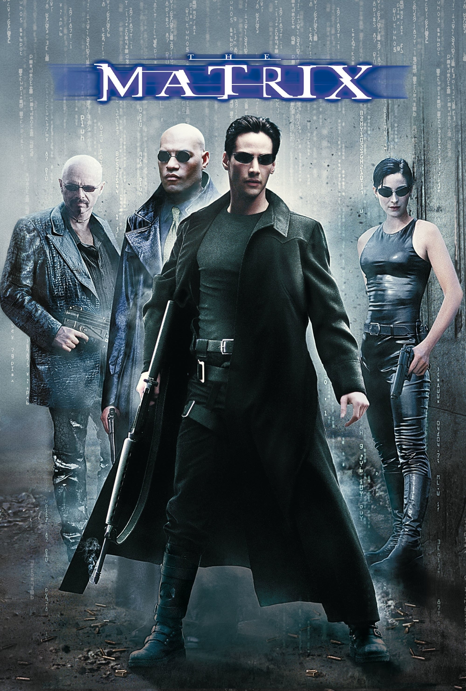

Матрица / The Matrix
(1999-2003)

Жизнь Томаса Андерсона разделена на две части: днём он - самый обычный офисный работник, получающий нагоняи от начальства, а ночью превращается в хакера по имени Нео, и нет места в сети, куда он не смог бы дотянуться. Но однажды всё меняется — герой, сам того не желая, узнаёт страшную правду: всё, что его окружает — не более, чем иллюзия, Матрица, а люди — всего лишь источник питания для искусственного интеллекта, поработившего человечество. И только Нео под силу изменить расстановку сил в этом чужом и страшном мире.
Гарри Поттер / Harry Potter
(2001-2011)
Гарри проводит свой пятый год в школе Хогвартс и обнаруживает, что многие из членов волшебного сообщества отрицают факт недавнего состязания юного волшебника с воплощением вселенского зла Волдемортом. Все делают вид, что не имеют ни малейшего представления о том, что злодей вернулся. Однако впереди волшебников ждет необычная схватка.
Джентльмены / The Gentlemen
(2019)

Один ушлый американец ещё со студенческих лет приторговывал наркотиками, а теперь придумал схему нелегального обогащения с использованием поместий обедневшей английской аристократии и очень неплохо на этом разбогател. Другой пронырливый журналист приходит к Рэю, правой руке американца, и предлагает тому купить киносценарий, в котором подробно описаны преступления его босса при участии других представителей лондонского криминального мира - партнёра-еврея, китайской диаспоры, чернокожих спортсменов и даже русского олигарха.